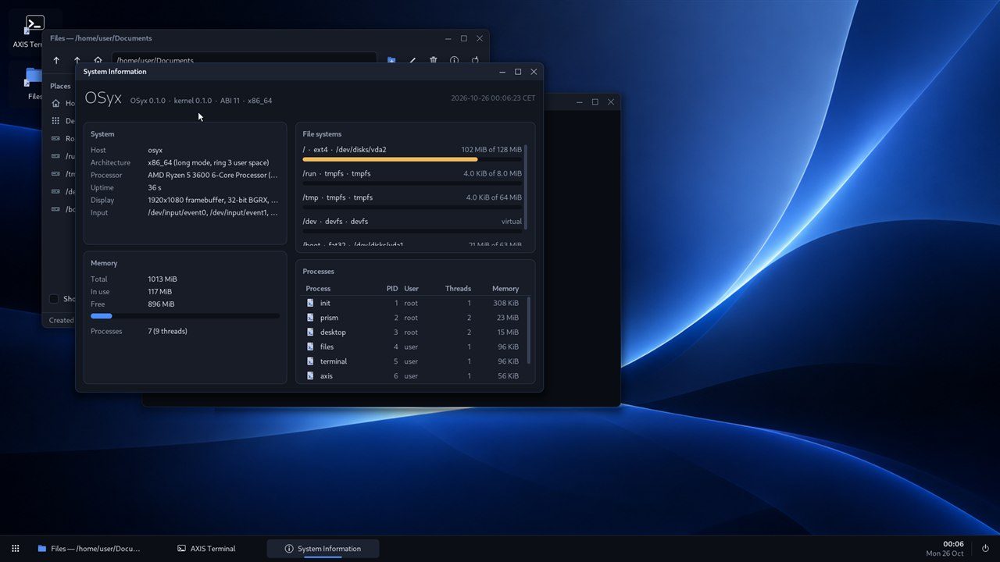
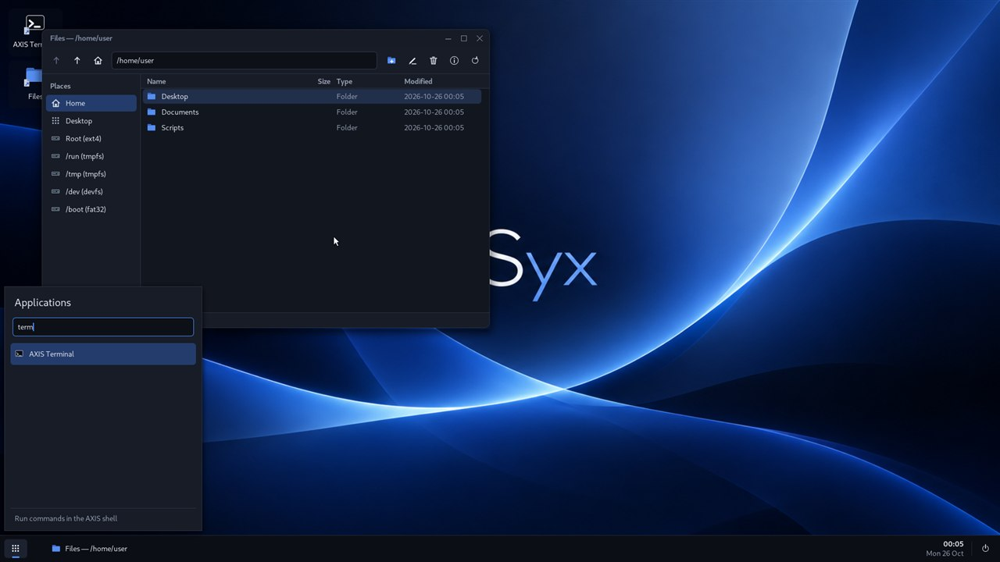
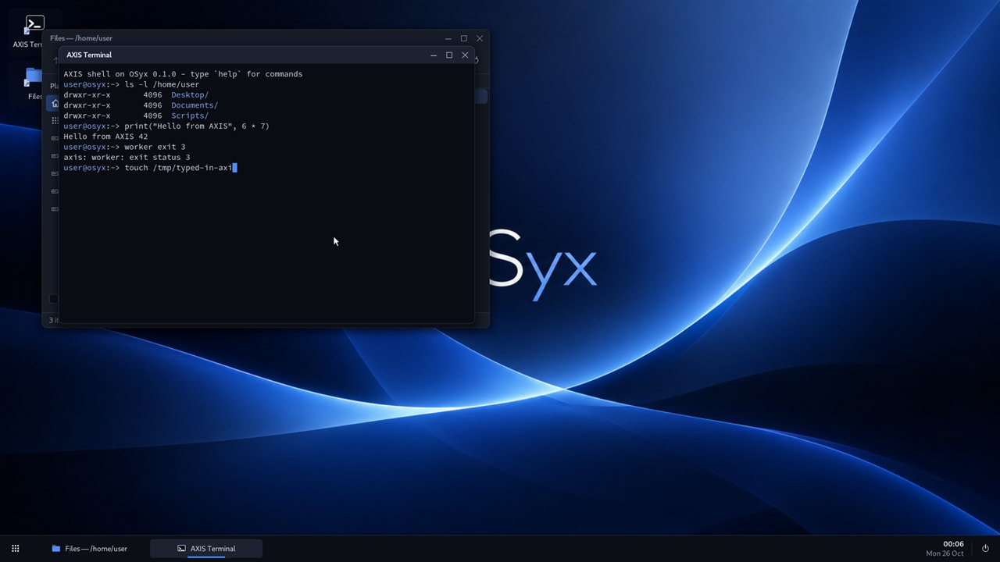
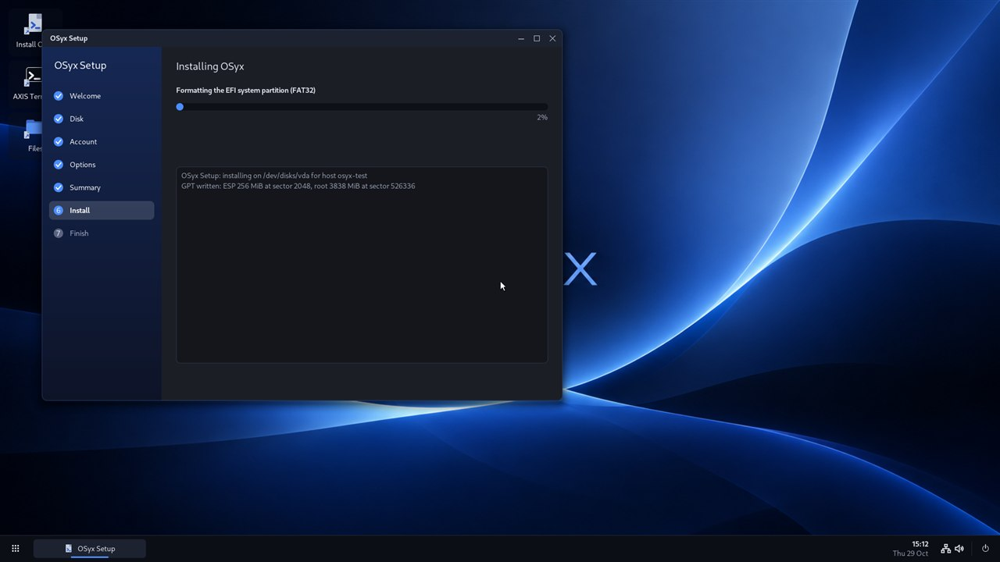

Its own foundation
A UEFI boot manager and a Rust kernel with memory management, scheduling, and drivers.
A new operating system, built from scratch in Rust. Explore what happens when you start from the kernel and build your way up.

OSyx is an independent x86-64 operating system with its own bootloader, kernel, file systems, network stack, compositor, and desktop.
It’s an ongoing project for people who want to see how a system comes together — and help shape what it becomes.
Read the overview ↗From the first boot to the desktop, each piece has a place.
A UEFI boot manager and a Rust kernel with memory management, scheduling, and drivers.
A compositor, taskbar, launcher, and native tools for working with files and system settings.
The winrun compatibility layer runs a subset of Windows programs. Support is evolving; not every application works yet.
A native network stack, Ethernet, Wi-Fi support, and signed system updates.
The real OSyx desktop, tools, and setup — captured from the project.



Try the live system on an x86-64 UEFI computer or explore it in QEMU. OSyx is actively developed, so check the project documentation for current hardware support.
View latest releaseDownload the live USB image from the latest release.
Write the image to a USB drive, then boot it with UEFI and Secure Boot off.
Try the live desktop. If you choose to install, Setup will erase the disk you select.
Writing an image erases the target USB drive. Check the README before you begin.
OSyx is free software, made in the open. Follow the work, report an issue, or contribute a little piece of the future.